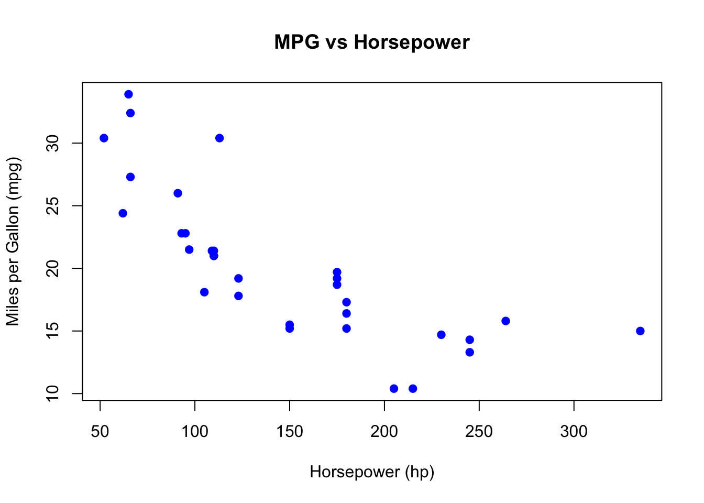
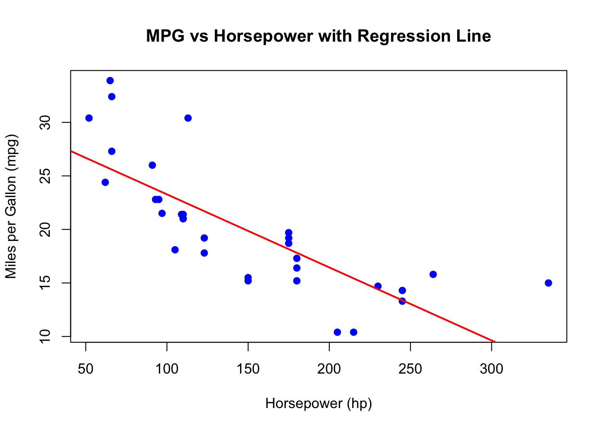
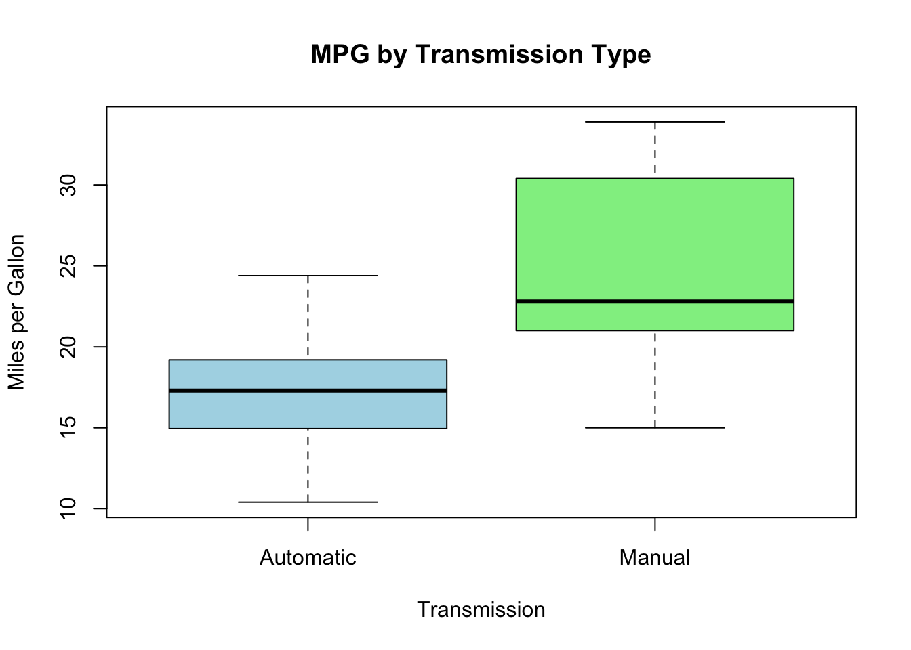

MGMT 17300: Data Mining Lab
Predictive Modeling in R
Overview
Lesson Exercise Review
Lesson Question!
Course Learning Milestones
The 8 Key Steps of a Data Mining Project
- Association Between Two Variables
- Model
- Simple Regression Model
- Making Predictions
- Multiple Regression Model
Lesson Exercises Review
Lesson Question!
Course Learning Milestones
Course Learning Milestones
The 8 Key Steps of a Data Mining Project
The 8 Key Steps of a Data Mining Project
Goal Setting
- Define the project’s goal
Data Understanding
- Acquire analysis tools
- Prepare data
- Data summarization
- Data visualization
Insights
- Data mining modeling
- Model validation
- Interpretation and implementation
Association Between Two Variables
Covariance
- The Covariance is a measure of the linear association between two variables.
- Positive values indicate a positive relationship.
- Negative values indicate a negative relationship.
Correlation Coefficient

Correlation is a unit-free measure of linear association and not necessarily causation.
The coefficient can take on values between −1 and +1.
- Values near −1 indicate a strong negative linear relationship.
- Values near +1 indicate a strong positive linear relationship.
The closer the correlation is to zero, the weaker the linear relationship.
Model
What is a model?
All models are wrong, but some are useful.
George Box
What does it mean to “model” data?
Let’s start with a very simple premise:
- to model, we need to make explicit the conditions under which a variable \(X\) is related to a variable \(Y\).
Let’s begin by giving specific names to these variables:
Dependent Variable (DV): This is our phenomenon of interest, usually denoted as \(Y\).
Independent Variable (IV): This is the phenomenon that explains/describe our dependent variable, generally denoted as \(X\).
What does it mean to “model” data?
Mathematically, we model \(Y\) as a function of \(X\). Statistically, modeling can serve two main purposes:
Prediction: The possibility of using the values of \(X\) to predict the value of \(Y\). There must be a substantive connection between these two variables for one to generate reliable predictions about the values of the other.
Explanation: Used to understand the connection and significance (both substantive and statistical) of the relationship between two variables. In this case, we aim to accurately estimate the impact of one variable on the other, preferably excluding any potential omitted variables.
Simple Regression Model Example
Objective
Analyze the relationship between horsepower (
hp) and miles per gallon (mpg).Build a simple linear regression model to predict
mpgbased onhp.
The mtcars Dataset: Overview
Built-in dataset in R.
Contains data on fuel consumption and 10 aspects of automobile design and performance for 32 cars (1973–74 models).
Variables Used
- mpg: Miles per gallon (Dependent Variable).
- hp: Gross horsepower (Independent Variable).
Exploring the Data: Summary Statistics
# Summary statistics for mpg and hp
summary(mtcars[, c("mpg", "hp")]) mpg hp
Min. :10.40 Min. : 52.0
1st Qu.:15.43 1st Qu.: 96.5
Median :19.20 Median :123.0
Mean :20.09 Mean :146.7
3rd Qu.:22.80 3rd Qu.:180.0
Max. :33.90 Max. :335.0 Scatter Plot of mpg vs hp
# Scatter plot
plot(mtcars$hp, mtcars$mpg,
main = "MPG vs Horsepower",
xlab = "Horsepower (hp)",
ylab = "Miles per Gallon (mpg)",
pch = 19, col = "blue")
Observation: As horsepower increases, miles per gallon tends to decrease.
Fitting the Simple Regression Model
# Fit the linear regression model
model <- lm(mpg ~ hp, data = mtcars)
summary(model)# Fit the linear regression model
model <- lm(mpg ~ hp, data = mtcars)
summary(model)
Call:
lm(formula = mpg ~ hp, data = mtcars)
Residuals:
Min 1Q Median 3Q Max
-5.7121 -2.1122 -0.8854 1.5819 8.2360
Coefficients:
Estimate Std. Error t value Pr(>|t|)
(Intercept) 30.09886 1.63392 18.421 < 2e-16 ***
hp -0.06823 0.01012 -6.742 1.79e-07 ***
---
Signif. codes: 0 '***' 0.001 '**' 0.01 '*' 0.05 '.' 0.1 ' ' 1
Residual standard error: 3.863 on 30 degrees of freedom
Multiple R-squared: 0.6024, Adjusted R-squared: 0.5892
F-statistic: 45.46 on 1 and 30 DF, p-value: 1.788e-07Interpreting the Results
Coefficients:
- Intercept (\(\beta_0\)): Expected
mpgwhenhpis zero. - Slope (\(\beta_1\)): Change in
mpgfor each additional horsepower.
- Intercept (\(\beta_0\)): Expected
R-squared: Proportion of variance in
mpgexplained byhp.p-value: Significance of the relationship between
hpandmpg.
Making Predictions
Predicting mpg for New hp Values
# New horsepower values
new_hp <- data.frame(hp = c(110, 150, 200))
# Predicted mpg
predicted_mpg <- predict(model, newdata = new_hp)
cbind(new_hp, Predicted_mpg = predicted_mpg) hp Predicted_mpg
1 110 22.59375
2 150 19.86462
3 200 16.45320Adding the Regression Line to the Scatter Plot
# Scatter plot with regression line
plot(mtcars$hp, mtcars$mpg,
main = "MPG vs Horsepower with Regression Line",
xlab = "Horsepower (hp)",
ylab = "Miles per Gallon (mpg)",
pch = 19, col = "blue")
abline(model, col = "red", lwd = 2)
Limitations
The model considers only one predictor (
hp).Potential influence of outliers or high-leverage points.
Other variables may affect
mpg(e.g., weight, number of cylinders).
Conclusion: Key Takeaways
There is a significant negative linear relationship between horsepower and miles per gallon.
The model can be used to predict fuel efficiency based on horsepower.
Recommendations
- Consider adding more variables for a multiple regression model.
- Further investigate the impact of other factors on fuel efficiency.
Multiple Regression Model
Precision and Accuracy

Precision: Refers to the consistency or reliability of the model’s predictions.
Accuracy: Refers to how close the model’s predictions are to the true values.
In the context of regression:
- High Precision, Low Accuracy: Predictions are consistent but biased.
- High Precision, High Accuracy: Predictions are both consistent and valid.
- Low Precision, Low Accuracy: Predictions are neither consistent nor valid.
- Low Precision, High Accuracy: Predictions are valid on average but have high variability.
To achieve high precision and high accuracy, we need to meet the model assumptions.
Motivation: Controlling for a Variable
- Puzzle: What is the effect of education on income?
- Y: Income
- X: Education
- Objective: X \(\rightarrow\) Y
- Challenge: X \(\leftarrow\) W \(\rightarrow\) Y
- W: IQ (Intelligence)
- Solution: Control for W
Motivation: Controlling for a Variable

Source: Causal Inference Animated Plots
Motivation: Controlling for a Variable

Source: Causal Inference Animated Plots
Omitted Variables (Confounders)
One of the most common errors in observational studies (besides selection bias and information bias — classification or measurement error);
It occurs when we suggest that the explanation for something is “confounded” with the effect of another variable;
For example, “the sun rose because the rooster crowed,” and not because of Earth’s rotation.
How to Address Omitted Variable Bias?
Be well-versed in the literature;
Select good control variables for your model;
That is, perform a multiple regression model.
Multiple Regression
Regression analysis involving two or more independent variables (x’s).
This subject area, called multiple regression analysis, enables us to consider more independent variables (factors) and thus obtain better estimates of the relationship than are possible with simple linear regression.
Multiple Regression Model
The equation that describes how the dependent variable \(y\) is related to the independent variables \(x_1, x_2, \ldots x_p\) and an error term \(\epsilon\) is:
\[ y = \beta_0 + \beta_1 x_1 + \beta_2 x_2 + \dots + \beta_p x_p + \epsilon \]
Where:
\(\beta_0, \beta_1, \beta_2, \dots, \beta_p\) are the unknown parameters.
\(\epsilon\) is a random variable called the error term with the same assumptions as in simple regression (Normality, zero mean, constant variance, independence).
\(p\) is the number of independent variables (dimension or complexity of the model).
Multiple Regression Equation
The equation that describes how the mean value of \(y\) is related to \(x_1, x_2, \ldots x_p\) is:
\[ E(y) = \beta_0 + \beta_1 x_1 + \beta_2 x_2 + \dots + \beta_p x_p \]
\(\beta_1, \ldots, \beta_p\) measure the marginal effects of the respective independent variables.
For example, \(\beta_1\) is the change in \(E(y)\) corresponding to a 1-unit increase in \(x_1\), when all other independent variables are held constant or when we control for all other independent variables.
Estimated Multiple Regression Equation
\[ \hat{y} = b_0 + b_1 x_1 + b_2 x_2 + \dots + b_p x_p \]
A simple random sample is used to compute sample slopes \(b_0, b_1, b_2, \dots, b_p\) that are used as the point estimators of the population slopes \(\beta_0, \beta_1, \beta_2, \dots, \beta_p\).
Hence, \(\hat{y}\) estimates \(E(Y)\).
Multiple Regression Model Example
Objective
- Analyze the relationship between multiple predictors and miles per gallon (
mpg). - Build a multiple linear regression model to predict
mpgbased on:- Horsepower (
hp) - Weight (
wt) - Transmission Type (
am) - Engine Type (
vs) - Number of Cylinders (
cyl)
- Horsepower (
Variables Used
- mpg: Miles per gallon (Dependent Variable).
- hp: Gross horsepower.
- wt: Weight (1000 lbs).
- am: Transmission (0 = automatic, 1 = manual).
- vs: Engine type (0 = V-shaped, 1 = straight).
- cyl: Number of cylinders.
Data Structure
# Structure of the dataset
str(mtcars[, c("mpg", "hp", "wt", "am", "vs", "cyl")])'data.frame': 32 obs. of 6 variables:
$ mpg: num 21 21 22.8 21.4 18.7 18.1 14.3 24.4 22.8 19.2 ...
$ hp : num 110 110 93 110 175 105 245 62 95 123 ...
$ wt : num 2.62 2.88 2.32 3.21 3.44 ...
$ am : num 1 1 1 0 0 0 0 0 0 0 ...
$ vs : num 0 0 1 1 0 1 0 1 1 1 ...
$ cyl: num 6 6 4 6 8 6 8 4 4 6 ...Summary Statistics
# Summary statistics for selected variables
summary(mtcars[, c("mpg", "hp", "wt", "am", "vs", "cyl")])Converting Categorical Variables
# Convert 'am', 'vs', and 'cyl' to factors
mtcars$am <- factor(mtcars$am, labels = c("Automatic", "Manual"))
mtcars$vs <- factor(mtcars$vs, labels = c("V-shaped", "Straight"))
mtcars$cyl <- factor(mtcars$cyl)Checking for Missing Values
# Check for NA values
colSums(is.na(mtcars))- Observation: No missing values in the selected variables.
Visualizing Relationships: Pairwise Scatter Plots
# Scatter plot matrix
pairs(mtcars[, c("mpg", "hp", "wt")], main = "Scatter Plot Matrix")
Boxplots for Categorical Variables
# Boxplot of mpg by Transmission Type
boxplot(mpg ~ am, data = mtcars,
main = "MPG by Transmission Type",
xlab = "Transmission",
ylab = "Miles per Gallon",
col = c("lightblue", "lightgreen"))
Fitting the Multiple Regression Model
# Fit the multiple linear regression model
model_mult <- lm(mpg ~ hp + wt + am + vs + cyl, data = mtcars)
summary(model_mult)# Fit the multiple linear regression model
model_mult <- lm(mpg ~ hp + wt + am + vs + cyl, data = mtcars)
summary(model_mult)
Call:
lm(formula = mpg ~ hp + wt + am + vs + cyl, data = mtcars)
Residuals:
Min 1Q Median 3Q Max
-4.3405 -1.2158 0.0046 0.9389 4.6354
Coefficients:
Estimate Std. Error t value Pr(>|t|)
(Intercept) 31.18461 3.42002 9.118 2e-09 ***
hp -0.03475 0.01382 -2.515 0.0187 *
wt -2.37337 0.88763 -2.674 0.0130 *
amManual 2.70384 1.59850 1.691 0.1032
vsStraight 1.99000 1.76018 1.131 0.2690
cyl6 -2.09011 1.62868 -1.283 0.2112
cyl8 0.29098 3.14270 0.093 0.9270
---
Signif. codes: 0 '***' 0.001 '**' 0.01 '*' 0.05 '.' 0.1 ' ' 1
Residual standard error: 2.397 on 25 degrees of freedom
Multiple R-squared: 0.8724, Adjusted R-squared: 0.8418
F-statistic: 28.49 on 6 and 25 DF, p-value: 5.064e-10Interpreting the Coefficients
- Intercept (\(\beta_0\)): Expected
mpgwhen all predictors are at reference levels or zero. - hp: Change in
mpgper unit increase in horsepower, holding other variables constant. - wt: Change in
mpgper 1000 lbs increase in weight, holding other variables constant. - am: Difference in
mpgbetween manual and automatic transmission. - vs: Difference in
mpgbetween straight and V-shaped engines. - cyl: Effect of the number of cylinders on
mpg.
Interpreting the Results
Significant Predictors
- hp and wt: Generally significant predictors of
mpg. - am: Transmission type may have a significant effect.
- vs and cyl: Assess their p-values to determine significance.
- hp and wt: Generally significant predictors of
Evaluating the Model
Adjusted R-squared: Measures the proportion of variance in
mpgexplained by the model, adjusted for the number of predictors.F-statistic: Tests the overall significance of the model.
p-values: Assess the significance of individual predictors.
Predicting mpg for New Data
# New data frame with predictor values
new_data <- data.frame(
hp = c(110, 150),
wt = c(2.5, 3.0),
am = factor(c("Manual", "Automatic"), levels = levels(mtcars$am)),
vs = factor(c("Straight", "V-shaped"), levels = levels(mtcars$vs)),
cyl = factor(c("4", "6"), levels = levels(mtcars$cyl))
)
# Predicted mpg
predicted_mpg <- predict(model_mult, newdata = new_data)
cbind(new_data, Predicted_mpg = predicted_mpg)# New data frame with predictor values
new_data <- data.frame(
hp = c(110, 150),
wt = c(2.5, 3.0),
am = factor(c("Manual", "Automatic"), levels = levels(mtcars$am)),
vs = factor(c("Straight", "V-shaped"), levels = levels(mtcars$vs)),
cyl = factor(c("4", "6"), levels = levels(mtcars$cyl))
)
# Predicted mpg
predicted_mpg <- predict(model_mult, newdata = new_data)
cbind(new_data, Predicted_mpg = predicted_mpg) hp wt am vs cyl Predicted_mpg
1 110 2.5 Manual Straight 4 26.12252
2 150 3.0 Automatic V-shaped 6 16.76187Summary
Summary
Main Takeaways from this lecture:
Regression models can be used to predict response variables outcomes with independent variables.
Compared to the Simple Regression Model, Multiple Regression Models allows for the inclusion of several predictors to improve model accuracy.